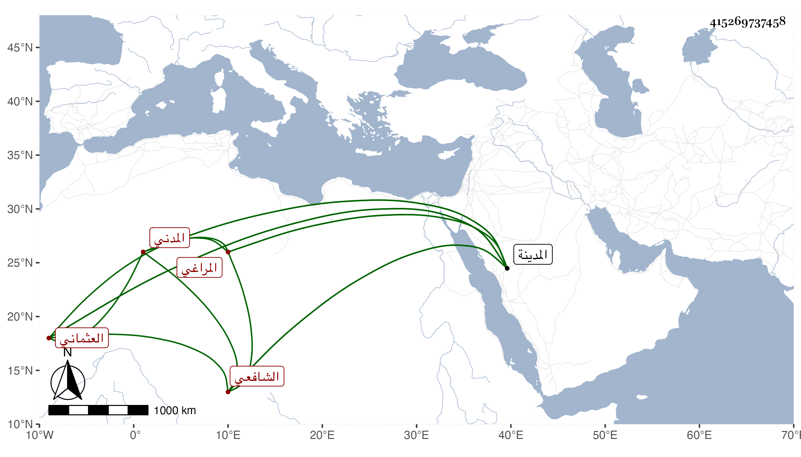

0902Sakhawi.DawLamic.ITO20230111-ara1.EIS1600.415269737458
Biography ID: 415269737458
199
أبو بكر بن محمد بن الزين أبي بكر بن الحسين بن عمر الزين بن ناصر الدين أبي الفرج بن الزين العثماني المراغي المدني الشافعي أخو محمد ووالد الكمال أبي الفضل محمد الماضيين ويسمى صاحب الترجمة أيضا محمدا . ولد بالمدينة قبل الثلاثين تقريبا ونشأ بها فحفظ المنهاج وألفية النحو وعرض في سنة اثنتين وأربعين فما بعدها على جماعة أجازه منهم الجمال محمد بن الصفي أحمد والشمس محمد بن عبد العزيز الكازرونيين والمحب المطري وسمع على أولهم الشفا بقراءة والده وصحيح مسلم بقراءة ثانيهم وغير ذلك وكذا سمع على عمه أبي الفتح المراغي الصحيحين واشتغل قليلا وسمع المنهاج الأصلي في البحث على أبي السعادات بن ظهيرة حين إقامته بالمدينة سنة تسع وأربعين . ومات بداء البرسام في شهر ربيع الأول سنة ثمان وخمسين رحمه الله .
